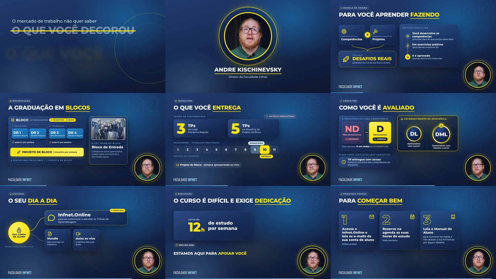
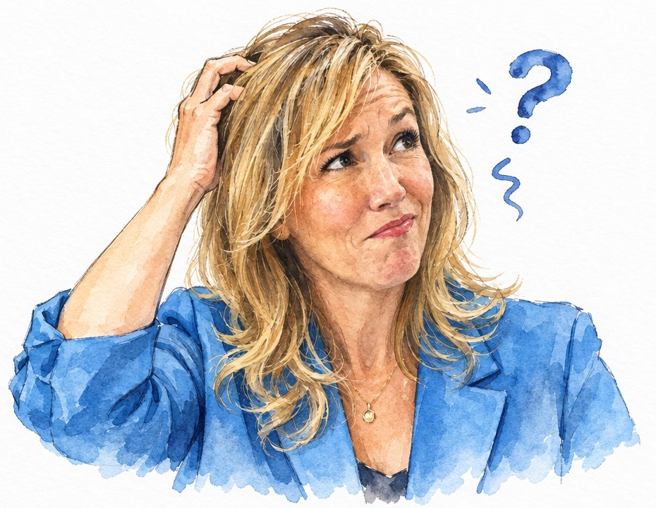
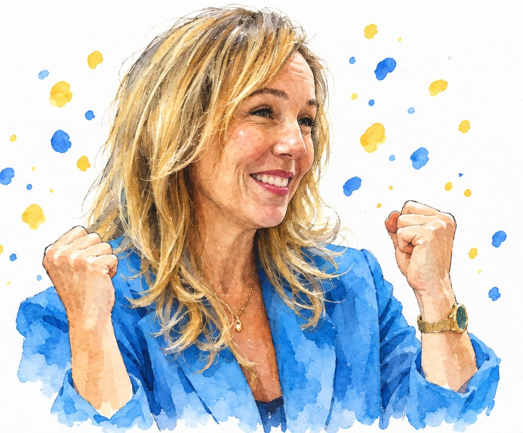

GUIA BÁSICO
Como produzir um vídeo institucional com o Claude
Para quem não é especialista em vídeo. Narrador em círculo, cenas animadas no tempo da fala, legendas, trilha e thumbnail, com a sua voz, o seu narrador e a sua identidade visual.

Telas do vídeo de exemplo, "Comece bem a sua graduação" (Faculdade Infnet, 4 minutos), feito em um dia de trabalho com o Claude.
Ilustrações: prof. Adriana, em aquarela digital gerada por IA a partir de uma foto.
1O que você vai ter no final
- Vídeo em 1080p, de 2 a 5 minutos, com e sem trilha
- Narrador em um círculo no canto da tela
- Cenas que acompanham cada frase da fala
- Legendas (.srt e .vtt)
- Thumbnail para o YouTube
- O projeto guardado, para ajustar depois
Você não mexe em programa de edição. O seu trabalho é decidir e aprovar: o texto, a aparência, a voz, a música. O Claude escreve, desenha, monta e renderiza.
2O que separar antes de começar
| Item | O que serve |
|---|
| Assunto e fonte | O manual, regulamento, página ou PDF de onde saem as informações. O Claude escreve a fala a partir dele. |
| Identidade visual | Logotipo para fundo escuro (PNG ou SVG), as cores principais (códigos como #FEDA0C) e a fonte, se houver. Um manual de marca resolve tudo. |
| Narrador | Melhor: um vídeo dele lendo o texto final, de frente, bem iluminado. Também serve: um vídeo antigo dele falando para a câmera (os lábios são ressincronizados) ou só uma boa foto. |
| Voz | Voz clonada no ElevenLabs, ou uma gravação da pessoa lendo o texto (celular em sala silenciosa). |
| Fotos (opcional) | 10 a 70 fotos reais para o Claude escolher 3 a 5. Confira a autorização de uso de imagem de quem aparece. |
| Foto para o thumbnail | Uma foto do narrador em boa resolução, com expressão leve. Quadro tirado de vídeo fica sem nitidez. |
3Como obter o skill e o kit
O skill (a receita que o Claude segue) e o kit (os modelos e arquivos de base) ficam guardados em um repositório privado no GitHub, um site de armazenamento de projetos. Você só precisa fazer isto uma vez.
Cinco passos, uma vez só
Passo 1 — Crie a sua conta no GitHub (gratuita)
- Abra github.com e clique em Sign up.
- Informe o seu e-mail, crie uma senha e escolha um nome de usuário (username).
- O GitHub envia um código para o seu e-mail. Digite o código para confirmar a conta.
- Anote o seu nome de usuário: você vai precisar dele no passo seguinte.
Passo 2 — Peça acesso ao repositório
- Envie o seu nome de usuário do GitHub ao prof. Andre Kischinevsky e peça acesso ao repositório Kischi/video-institucional.
- Quando ele liberar, você recebe um e-mail do GitHub com um convite. Clique em View invitation e depois em Accept invitation. O convite vale por 7 dias.
Para quem libera o acesso: no repositório, abra Settings, depois Collaborators, clique em Add people e digite o nome de usuário de quem pediu.
Passo 3 — Baixe os dois arquivos
- Já com a sua conta aberta, acesse github.com/Kischi/video-institucional e entre na pasta downloads.
- Clique em video-institucional-skill.zip e depois no botão de download, no alto à direita. Faça o mesmo com kit-video-institucional.zip.
- Não descompacte os arquivos: eles são usados assim mesmo.
Se quiser também o projeto completo do vídeo de exemplo, com os vídeos do narrador, volte à página inicial do repositório, clique no botão verde Code e em Download ZIP.
Passo 4 — Instale o skill no Claude
- Abra o Claude (claude.ai ou o aplicativo) e clique em Personalizar (Customize), na barra lateral, e depois em Skills.
- Clique no botão +, depois em Create skill e em Upload a skill.
- Escolha o arquivo video-institucional-skill.zip. O skill "video-institucional" aparece na lista; deixe-o ligado.
Se a área de Skills não aparecer, ative Code execution and file creation em Settings, Capabilities. Em contas de empresa, pode ser preciso que o administrador libere o uso de skills.
Passo 5 — Comece o seu vídeo
- Abra uma conversa nova no Claude e anexe o arquivo kit-video-institucional.zip, junto com o material da seção 2 (documento-fonte, logotipo, vídeo ou foto do narrador).
- Escreva o pedido da Etapa 1, na próxima seção. O Claude conduz o resto.
4As etapas, na ordem
A ordem importa: cada etapa depende da anterior, e as últimas são as mais caras de refazer. Aprove uma antes de pedir a próxima.
A ideia vira texto
Etapa 1 — O texto da fala
"Use o skill Vídeo Institucional. Quero um vídeo de uns 4 minutos explicando [assunto] para [público], com base neste documento. Comece pelo texto da fala, em um documento editável."
Leia em voz alta, corte o que sobra, corrija termos. Cerca de 650 palavras dão 4 minutos. Feche o texto de verdade: mudar a fala depois obriga a refazer voz, sincronização dos lábios e encaixe da música.
Etapa 2 — A aparência das cenas
"Texto aprovado. Agora me mostre um quadro parado de cada cena, na identidade visual da [marca], antes de animar."
Olhe quadro a quadro e comente como comentaria um slide: "esse texto encosta na borda", "essa imagem não ficou bonita", "essa frase é redundante". É o momento barato de mudar.
Etapa 3 — Fotos (opcional)
"Selecionei fotos nesta pasta. Escolha algumas e faça um tratamento que dê unidade, para parecerem parte dos slides."
Etapa 4 — A narração
O Claude gera a voz em partes, duas versões de cada. Você ouve e diz "primeira" ou "segunda". Preste atenção em siglas, nomes próprios e palavras estrangeiras: são onde a voz sintética erra. Depois ele monta o arquivo completo. Ouça o arquivo completo e aprove antes de seguir.

A parte mais técnica: o Claude conduz
Etapa 5 — Animação, narrador e render
O Claude anima as cenas no tempo de cada frase e monta o vídeo do narrador. Com ElevenLabs, ele pede que você envie dois arquivos (um vídeo e um áudio) por um seletor na conversa, um de cada vez, para sincronizar os lábios. O render leva cerca de 20 minutos.
Etapa 6 — A trilha, por último
"Quero uma trilha suave e interessante, que não seja comum nem tenha jeito de IA, composta para os momentos do vídeo."
A música é composta no tamanho do vídeo e encaixada para o acorde final cair junto com o logotipo. Ajuste de volume não custa nada: peça até ficar bom.
Etapa 7 — Thumbnail e outras versões
"Faça um thumbnail bonito de YouTube para este vídeo." / "Agora faça a versão com a identidade da [outra marca]."
5Com ou sem ElevenLabs
| Parte | Com ElevenLabs | Sem ElevenLabs |
|---|
| Voz | Voz clonada lê o texto. Corrigir uma frase é regravar um parágrafo em segundos. | A pessoa grava a leitura. Corrigir é gravar de novo o trecho. |
| Tempo de cada palavra | Alinhamento automático, sem custo. | Um transcritor com tempos por palavra (por exemplo, Whisper). |
| Narrador | Vídeo antigo + sincronização dos lábios. | Vídeo dele lendo o roteiro (fica até melhor) ou foto fixa com o anel pulsando com a voz. |
| Trilha | Composta sob medida. | Música de biblioteca livre, como a Biblioteca de Áudio do YouTube. |
| Custo | Cerca de US$ 5 por vídeo de 4 minutos, sem retrabalho. | Nenhum além do Claude. |
Quanto custou o exemplo. O vídeo de 4 minutos consumiu cerca de 56 mil créditos do ElevenLabs (uns US$ 10), contando três rodadas de revisão. Uma produção direta fica perto de 25 mil créditos: voz 8 mil, sincronização dos lábios 9 mil, trilha 3,7 mil e uma margem para regravações. A sincronização dos lábios é o item mais caro e é refeita sempre que a fala muda.
6Para outro narrador
- Voz: clone a voz dele no ElevenLabs (alguns minutos de áudio limpo, com autorização dele) ou peça a gravação da leitura.
- Imagem: envie um vídeo dele falando de frente, fundo neutro, sem letreiros sobre o rosto. O Claude recorta de 8 a 12 trechos de 5 a 20 segundos. Quanto mais trechos, menos repetição.
- Apresentação: diga como ele se apresenta (nome e cargo), na fala e no letreiro.
7Para outra identidade visual
- Envie o logotipo (versão clara, para fundo escuro), as cores e a fonte.
- Diga qual é a cor de destaque (no exemplo, o amarelo) e a cor de fundo (o azul-marinho).
- Peça os quadros parados da etapa 2 já na nova marca e aprove antes de animar.
Se o mesmo vídeo vai sair em duas marcas, não cite o nome da instituição na fala. Assim a mesma narração e a mesma sincronização servem para as duas, e só as cores e o logotipo mudam.
8O que aprendemos fazendo
- Uma etapa por vez. Texto, depois quadros, depois voz, depois o resto. Pular etapas sai caro.
- O Claude não ouve nem assiste. Ele mede e confere quadros parados, mas quem julga voz, lábios, música e ritmo é você. Diga o minuto e o segundo do que quer mudar.
- Junte os pedidos de mudança de fala em uma rodada só. Mudança só de imagem pode vir a qualquer momento.
- Siglas e estrangeirismos pedem teste de pronúncia: ouça duas versões e escolha.
- Regravar um pedaço pequeno muda o timbre. Regrave o parágrafo inteiro.
- Música baixa demais é o erro comum. Peça para aumentar; não custa nada.
- Confira o nome do arquivo que o Claude manda abrir. Ao longo do trabalho surgem várias versões.
- Peça o custo antes de cada geração paga e o total ao fim de cada rodada.

Vídeo pronto!
Repositório privado Kischi/video-institucional · arquivos prontos na pasta downloads · skill em video-institucional/SKILL.md · comandos em video-institucional/kit/LEIA-ME.md · novembro de 2026